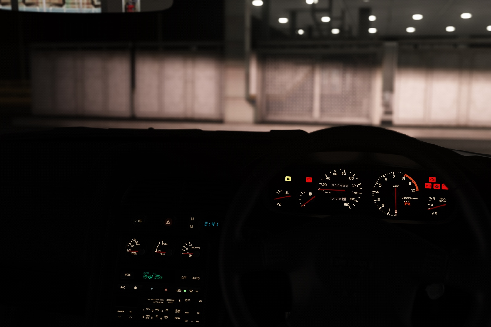

1995 Nissan Skyline GT-R V-Spec converted from Gran Turismo Sport to Assetto Corsa.
Has Nismo LMGT4 wheels and aftermarket coilovers.
This is the first car I've ever converted from Gran Turismo. Outdated, unfinished and not touched in a very long time. Will be revisited sooner or later.
Pre-facelift lights aren't from GT:S but I forgot who their author is.

 Get me outta here!
Get me outta here!